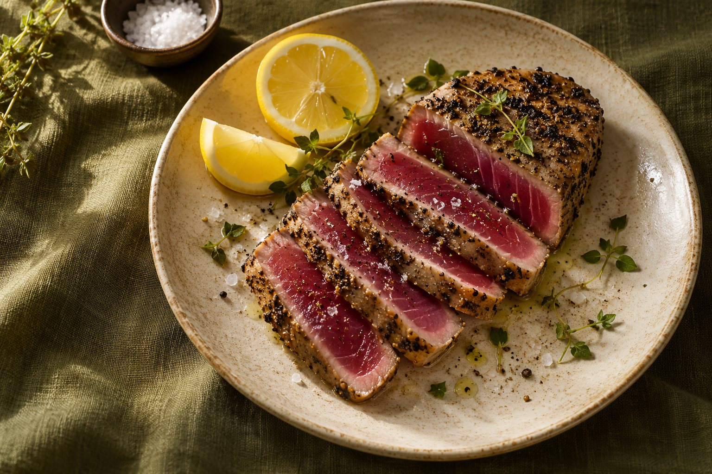

Cook with confidence.
Practical guides to ingredients, cooking techniques, and the tools you use every day.
Explore the guides
Browse by topic
Featured guides
-
Cooking techniques
How to grill beets
Prep, season, and grill beets for a smoky side dish.
-
Ingredients
What those spots and rings in eggs mean
Find out what causes common discoloration in eggs.
-
Kitchen tools
Get more from your espresso machine
Dial in your grind, steam milk, and keep your machine clean.